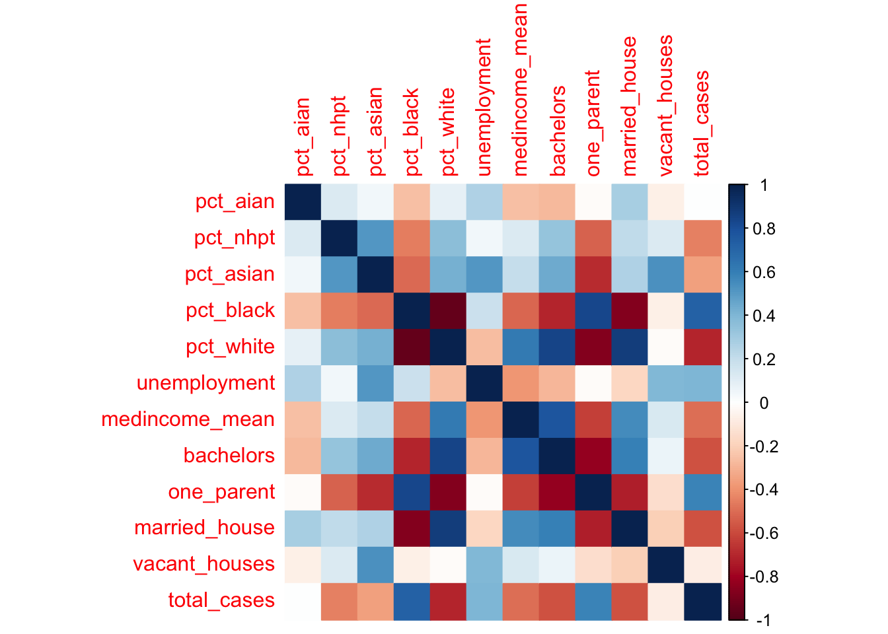
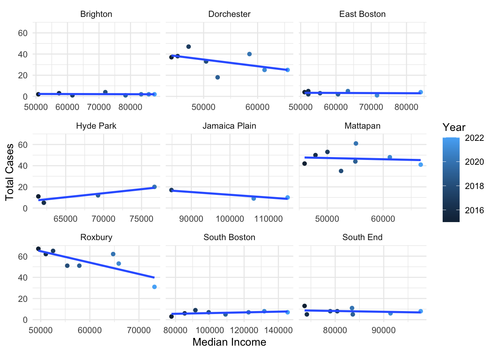

Here we provide a detailed analysis using more sophisticated statistics techniques.
This comes from the file analysis.qmd.
We describe here our detailed data analysis. This page will provide an overview of what questions you addressed, illustrations of relevant aspects of the data with tables and figures, and a statistical model that attempts to answer part of the question. You’ll also reflect on next steps and further analysis.
The audience for this page is someone like your class mates, so you can expect that they have some level of statistical and quantitative sophistication and understand ideas like linear and logistic regression, coefficients, confidence intervals, overfitting, etc.
While the exact number of figures and tables will vary and depend on your analysis, you should target around 5 to 6. An overly long analysis could lead to losing points. If you want you can link back to your blog posts or create separate pages with more details.
The style of this paper should aim to be that of an academic paper. I don’t expect this to be of publication quality but you should keep that aim in mind. Avoid using “we” too frequently, for example “We also found that …”. Describe your methodology and your findings but don’t describe your whole process.
Example of loading data
The code below shows an example of loading the loan refusal data set (which you should delete at some point).
library(tidyverse) print(getwd()) data <- read_csv(here::here(“dataset/loan_refusal_clean.csv”)) load(here::here(“dataset/loan_refusal.RData”)) print(ls())
Note on Attribution
In general, you should try to provide links to relevant resources, especially those that helped you. You don’t have to link to every StackOverflow post you used but if there are explainers on aspects of the data or specific models that you found helpful, try to link to those. Also, try to link to other sources that might support (or refute) your analysis. These can just be regular hyperlinks. You don’t need a formal citation.
If you are directly quoting from a source, please make that clear. You can show quotes using > like this
> To be or not to be.
To be or not to be.
Rubric: On this page
You will
Introduce what motivates your Data Analysis (DA)
Which variables and relationships are you most interested in?
What questions are you interested in answering?
Provide context for the rest of the page. This will include figures/tables that illustrate aspects of the data of your question.
Modeling and Inference
The page will include some kind of formal statistical model. This could be a linear regression, logistic regression, or another modeling framework.
Explain the ideas and techniques you used to choose the predictors for your model. (Think about including interaction terms and other transformations of your variables.)
Describe the results of your modelling and make sure to give a sense of the uncertainty in your estimates and conclusions.
Explain the flaws and limitations of your analysis
Are there some assumptions that you needed to make that might not hold? Is there other data that would help to answer your questions?
Clarity Figures
Are your figures/tables/results easy to read, informative, without problems like overplotting, hard-to-read labels, etc?
Each figure should provide a key insight. Too many figures or other data summaries can detract from this. (While not a hard limit, around 5 total figures is probably a good target.)
Default lm output and plots are typically not acceptable.
Clarity of Explanations
How well do you explain each figure/result?
Do you provide interpretations that suggest further analysis or explanations for observed phenomenon?
Organization and cleanliness.
Make sure to remove excessive warnings, hide most or all code, organize with sections or multiple pages, use bullets, etc.
This page should be self-contained, i.e. provide a description of the relevant data.
library(tidycensus)library(tidyverse)
── Attaching core tidyverse packages ──────────────────────── tidyverse 2.0.0 ──
✔ dplyr 1.1.4 ✔ readr 2.1.5
✔ forcats 1.0.0 ✔ stringr 1.5.1
✔ ggplot2 3.4.4 ✔ tibble 3.2.1
✔ lubridate 1.9.3 ✔ tidyr 1.3.0
✔ purrr 1.0.2
── Conflicts ────────────────────────────────────────── tidyverse_conflicts() ──
✖ dplyr::filter() masks stats::filter()
✖ dplyr::lag() masks stats::lag()
ℹ Use the conflicted package (<http://conflicted.r-lib.org/>) to force all conflicts to become errors
library(sandwich)library(lmtest)
Loading required package: zoo
Attaching package: 'zoo'
The following objects are masked from 'package:base':
as.Date, as.Date.numeric
library(car)
Loading required package: carData
Attaching package: 'car'
The following object is masked from 'package:dplyr':
recode
The following object is masked from 'package:purrr':
some
library(leaps)library(segregation)library(tigris)
To enable caching of data, set `options(tigris_use_cache = TRUE)`
in your R script or .Rprofile.
library(sf)
Linking to GEOS 3.11.0, GDAL 3.5.3, PROJ 9.1.0; sf_use_s2() is TRUE
library(olsrr)
Attaching package: 'olsrr'
The following object is masked from 'package:datasets':
rivers
library(GWmodel)
Loading required package: robustbase
Loading required package: sp
Loading required package: Rcpp
Welcome to GWmodel version 2.3-2.
#time to work plot final_df%>%group_by(district_name)%>%na.omit(aggregate_time_to_work)%>%summarise(work_time=mean(aggregate_time_to_work), total_cases =sum(!duplicated(incident_num))) %>%ggplot(aes( work_time,total_cases))+geom_point()+geom_smooth(method ='lm')+labs(y ='Avg travel time to work',title ='Avg Travel Time to Work and Total Cases')
`geom_smooth()` using formula = 'y ~ x'

#income plotfinal_df%>%group_by(district_name)%>%summarise(medincome_mean=mean(household_medincome), total_cases =sum(!duplicated(incident_num))) %>%ggplot(aes(district_name, medincome_mean,fill = total_cases))+geom_bar(stat='identity')+theme(axis.text.x =element_text(angle =90, vjust =0.5, hjust=1))+labs(y ='Avg median income',title ='Avg Median Income and Total Cases Over All Years')

#single parent plot final_df%>%group_by(district_name)%>%summarise(single_household =mean(one_parent/ total_house_units),total_cases =sum(!duplicated(incident_num))) %>%ggplot(aes(district_name,single_household, fill = total_cases))+geom_bar(stat='identity')+theme(axis.text.x =element_text(angle =90, vjust =0.5, hjust=1))+labs(title ='Pct of Households with Single Parent')
`summarise()` has grouped output by 'district_name'. You can override using the
`.groups` argument.
#OLS with all variables ols<-lm(total_cases~travel_work+ pct_white+pct_black+asian_pct+nhpt_pct+aian_pct+district_name+ unemployment+ medincome_mean+bachelors+one_parent+ vacant_houses+married_house, data = lm_dat)coeftest(ols, vcov. = vcovHC) # data is heteroskedastic, opted to use the heteroskedastic robust standard errors
vif(ols) #variables highly correlated, high pvalues, sign of coefficients opposite of their correlation,where you live is the best predictor of the total number of cases,
#attempted variable selection, all the districts were retained, hence their predictive power, travel_work, income, married households also selected based on their significance,
#socieo economic and race ols<-lm(total_cases~ asian_pct+pct_white+pct_black+nhpt_pct+aian_pct+travel_work+unemployment+medincome_mean+bachelors+one_parent+married_house, data = lm_dat)coeftest(ols, vcov. = vcovHC)
ols_step_forward_p(ols) # medium income,bachelors,pct_asian, pct_white significant 5% level, one_parent,travel_work at 10%
Stepwise Summary
-----------------------------------------------------------------------------
Step Variable AIC SBC SBIC R2 Adj. R2
-----------------------------------------------------------------------------
0 Base Model 536.679 540.868 364.004 0.00000 0.00000
1 pct_black 496.985 503.269 324.746 0.50087 0.49226
2 travel_work 485.775 494.152 313.789 0.59951 0.58546
3 medincome_mean 481.693 492.164 309.881 0.63812 0.61873
4 asian_pct 478.236 490.802 306.879 0.66958 0.64555
5 one_parent 471.328 485.989 301.496 0.71516 0.68879
-----------------------------------------------------------------------------
Final Model Output
------------------
Model Summary
---------------------------------------------------------------
R 0.846 RMSE 10.937
R-Squared 0.715 MSE 132.904
Adj. R-Squared 0.689 Coef. Var 58.273
Pred R-Squared 0.651 AIC 471.328
MAE 8.960 SBC 485.989
---------------------------------------------------------------
RMSE: Root Mean Square Error
MSE: Mean Square Error
MAE: Mean Absolute Error
AIC: Akaike Information Criteria
SBC: Schwarz Bayesian Criteria
ANOVA
---------------------------------------------------------------------
Sum of
Squares DF Mean Square F Sig.
---------------------------------------------------------------------
Regression 18019.393 5 3603.879 27.116 0.0000
Residual 7176.791 54 132.904
Total 25196.183 59
---------------------------------------------------------------------
Parameter Estimates
------------------------------------------------------------------------------------------------
model Beta Std. Error Std. Beta t Sig lower upper
------------------------------------------------------------------------------------------------
(Intercept) 100.173 16.623 6.026 0.000 66.845 133.500
pct_black 46.698 11.284 0.585 4.138 0.000 24.075 69.321
travel_work 0.000 0.000 -0.480 -5.526 0.000 0.000 0.000
medincome_mean 0.000 0.000 -0.426 -4.158 0.000 -0.001 0.000
asian_pct -162.440 43.028 -0.469 -3.775 0.000 -248.706 -76.175
one_parent -149.799 50.957 -0.568 -2.940 0.005 -251.962 -47.637
------------------------------------------------------------------------------------------------
#coefficeint signs alot more interpretable and align with correlation direction, #probably should add one more regression with interaction terms
#map segregation index, relied on tidycensus book race_data<-c("White_alone", "Black_or_African_American_alone","American_Indian_and_Alaska_Native_alone","Asian_alone", "Native_Hawaiian_and_Other_Pacific_Islander_alone")pivot_race<-final_df%>%group_by(year, GEOID_TRACT_20)%>%pivot_longer(race_data,names_to ='ethnicity',values_to ='population_count')%>%ungroup()%>%group_by(ethnicity, GEOID_TRACT_20)%>%summarise(mean_population_count =mean(population_count))
Warning: Using an external vector in selections was deprecated in tidyselect 1.1.0.
ℹ Please use `all_of()` or `any_of()` instead.
# Was:
data %>% select(race_data)
# Now:
data %>% select(all_of(race_data))
See <https://tidyselect.r-lib.org/reference/faq-external-vector.html>.
`summarise()` has grouped output by 'ethnicity'. You can override using the
`.groups` argument.
Warning: • You have not set a Census API key. Users without a key are limited to 500
queries per day and may experience performance limitations.
ℹ For best results, get a Census API key at
http://api.census.gov/data/key_signup.html and then supply the key to the
`census_api_key()` function to use it throughout your tidycensus session.
This warning is displayed once per session.
Downloading feature geometry from the Census website. To cache shapefiles for use in future sessions, set `options(tigris_use_cache = TRUE)`.
#compare this to geospatial weighted regression maps
#Geography weighted Regression #Implemented with the GWmodel R package and spgwr package that offer a methods for a geographical robust weighted regreession# The GWR model computes a local regression model for each location, while including a distance decay function, or a weight added to sum of linear combinations which specifies how observations outside the current location will be weighted# relative to their distance. A kernel bandwith is implemented to determine the cutoff distnace for observations that will be included for a locations set of linear combinations# The GWR model returns local parameter estimates, and the local R-squared quatifying how much variance was captured in a given area. We plot the R-squared statistic for each location in our data below##best data to run this is just socieo economic,ols<-lm(total_cases~ unemployment+medincome_mean+bachelors+one_parent+ vacant_houses+married_house, data = lm_dat)coeftest(ols, vcov. = vcovHC)
Warning: Returning more (or less) than 1 row per `summarise()` group was deprecated in
dplyr 1.1.0.
ℹ Please use `reframe()` instead.
ℹ When switching from `summarise()` to `reframe()`, remember that `reframe()`
always returns an ungrouped data frame and adjust accordingly.
`summarise()` has grouped output by 'district_name', 'year'. You can override
using the `.groups` argument.
geo_reg<-st_as_sf(geo_dat)%>%as_Spatial()#limitation: travel_work has na values, cannot include this in model, even though it would be great to have that plotted #other variables we should add to aid analysis?formula2 <-"total_cases~ unemployment+ vacant_houses+medincome_mean+bachelors+one_parent+married_house"bw <-bw.gwr(formula = formula2, data = geo_reg, kernel ="bisquare",adaptive =TRUE)
#great R-squared and all of our variables are statistically significant at least 10% level, this is good#map for beta, choose the fill variable/beta coefficient #where is the effect positive and negative, ggplot(gw_model_results, aes(fill = unemployment)) +geom_sf(color =NA) +scale_fill_viridis_c() +theme_void() +labs(fill ="Local β Unemployment")